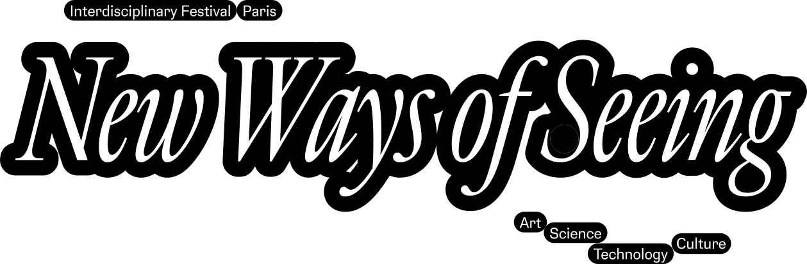

A space where conversations about technology, art, and culture happen between disciplines that rarely meet. Researchers critique, institutions programme, practitioners build — each with their own language, their own conclusions, their own room. New Ways of Seeing opens a porous in-between space for all of them to gather & contaminate each other.
"Quote from 2025 participant or testimonial"
New Ways of Seeing is a French non-profit festival at the intersection of art, science, technology, and culture — conceived as a common space without hierarchy, without predetermined conclusions, where disciplines that are ordinarily kept separate can converge, contaminate each other, and produce something that none of them could produce alone.
The first edition of New Ways of Seeing was held during Paris Art Week on October 24–25, 2025, taking place across two Parisian institutions: the Maison Européenne de la Photographie, and the École Supérieure du Digital. It was part of the MEP's official programming.